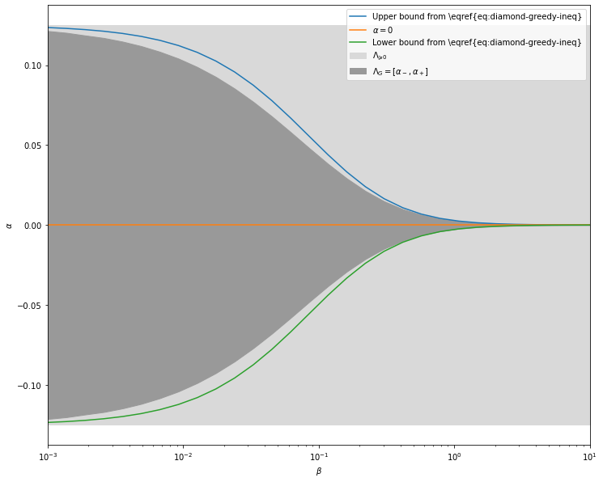
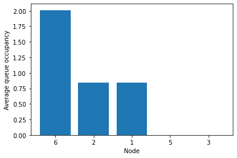
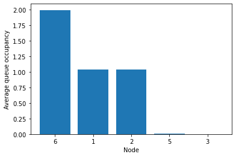
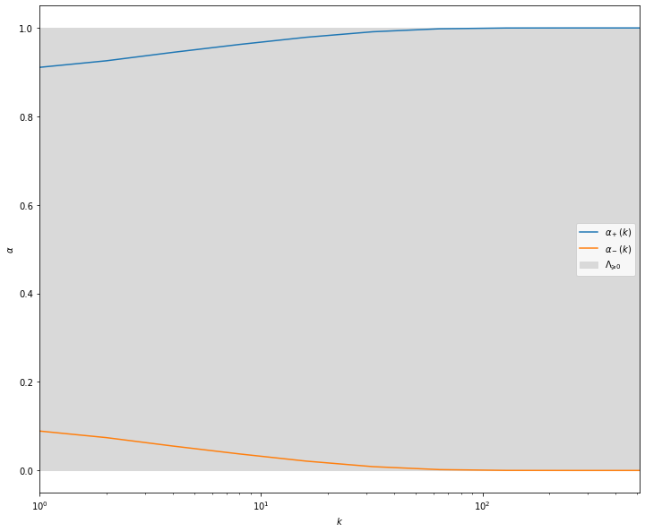
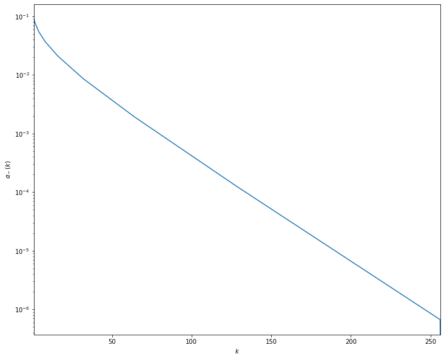
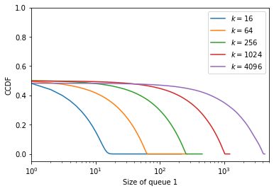
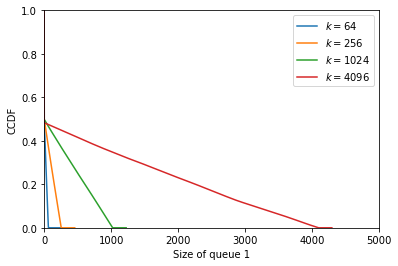
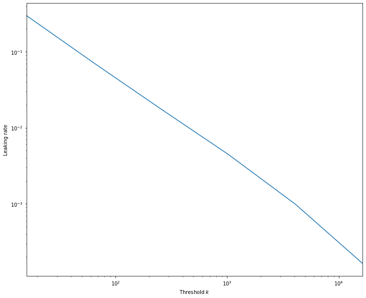

Stochastic matching on simple graphs
This is the notebook associated with the paper Stochastic dynamic matching: A mixed graph-theory and linear-algebra approach.
Its goal is to demonstrate how the results from the paper above can be obtained using the stochasting_matching package.
It contains in particular the production of all simulation-based results from the paper.
Note that the notebook is NOT intended to be self-contained. Please refer to the paper for context and explanations.
[1]:
import stochastic_matching as sm
from stochastic_matching.display import VIS_OPTIONS
VIS_OPTIONS['height'] = 300
VIS_OPTIONS['interaction']['navigationButtons'] = False
import numpy as np
The default simulation corresponds to \(10^{digits}\) arrivals.
Values below \(6\) should only be used for debugging.
Use \(10\) for high quality results.
Parallelization is used. You can cap the number of // jobs.
[2]:
digits = 10
T = 10**digits
max_jobs = 32
Basis of the kernel
This section of the notebook reproduces figures from Basis of the kernel of the incidence matrix parts.
Vector of the kernel space for the diamond graph.
[3]:
diamond = sm.CycleChain(names = [str(i) for i in range(1, 5)])
diamond.show_kernel(disp_rates=False)
Vector of the kernel space for a kayak paddle.
[4]:
kayak = sm.KayakPaddle(3, 2, 5, names = [str(i) for i in range(1, 10)])
kayak.show_kernel(disp_rates=False)
Two possible constructions of a kernel basis for the triamond graph
[5]:
triamond = sm.CycleChain(c=3, names = ["1", "5", "2", "4", "3"])
triamond.show_graph()
[6]:
triamond.seeds = [1, 3]
triamond.show_kernel(disp_rates=False)
[7]:
triamond.seeds = [2, 4]
triamond.show_kernel(disp_rates=False)
Two possible constructions of a kernel basis for the codomino graph
[8]:
codomino = sm.Codomino(names=["1", "6", "2", "3", "5", "4"])
codomino.show_graph()
[9]:
codomino.seeds = [1, 4]
codomino.show_kernel(disp_rates=False)
[10]:
codomino.seeds = [0, 2]
codomino.show_kernel(disp_rates=False)
Bijective vertices and facets of the convex polytope
This section of the notebook reproduces examples of polytopes.
Essential matching, simple polytope
[11]:
# Generic solution
codomino = sm.Codomino(names=["1", "6", "2", "3", "5", "4"], rates=[4, 5, 5, 3, 3, 2])
codomino.base_flow = codomino.maximin
codomino.seeds = [0, 2]
codomino.show_kernel(disp_rates=False, disp_flow=True)
[12]:
# Vertices
codomino.vertices
[12]:
[{'kernel_coordinates': array([-1., -1.]),
'edge_coordinates': array([1., 3., 1., 3., 1., 0., 2., 0.]),
'null_edges': [5, 7],
'bijective': True},
{'kernel_coordinates': array([-1., 0.]),
'edge_coordinates': array([1., 3., 2., 2., 0., 1., 2., 0.]),
'null_edges': [4, 7],
'bijective': True},
{'kernel_coordinates': array([0., 1.]),
'edge_coordinates': array([2., 2., 3., 0., 0., 2., 1., 1.]),
'null_edges': [3, 4],
'bijective': True},
{'kernel_coordinates': array([ 1., -1.]),
'edge_coordinates': array([3., 1., 1., 1., 3., 0., 0., 2.]),
'null_edges': [5, 6],
'bijective': True},
{'kernel_coordinates': array([1., 0.]),
'edge_coordinates': array([3., 1., 2., 0., 2., 1., 0., 2.]),
'null_edges': [3, 6],
'bijective': True}]
[13]:
for i in range(5):
codomino.show_vertex(i, disp_rates=False, vis_options={'height': 150})
Non-Essential matching, simple polytope
[14]:
# Generic solution
codomino.rates = [2, 2, 4, 4, 2, 2]
codomino.base_flow = codomino.kernel_to_edge([1/3, 0])
codomino.show_kernel(disp_rates=False, disp_flow=True)
[15]:
# Vertices
codomino.vertices
[15]:
[{'kernel_coordinates': array([-1., -1.]),
'edge_coordinates': array([0., 2., 0., 2., 2., 0., 2., 0.]),
'null_edges': [0, 2, 5, 7],
'bijective': False},
{'kernel_coordinates': array([-1., 1.]),
'edge_coordinates': array([0., 2., 2., 0., 0., 2., 2., 0.]),
'null_edges': [0, 3, 4, 7],
'bijective': False},
{'kernel_coordinates': array([ 1., -1.]),
'edge_coordinates': array([2., 0., 0., 0., 4., 0., 0., 2.]),
'null_edges': [1, 2, 3, 5, 6],
'bijective': False}]
[16]:
for i in range(3):
codomino.show_vertex(i, disp_rates=False, vis_options={'height': 150})
Non-simple polytope
[17]:
pyramid = sm.Pyramid(rates = [4, 3, 3, 3, 6, 6, 3, 4, 4, 4],
names = ["9", "2", "1", "8", "7", "3", "4", "5", "6", "10"])
pyramid.seeds = [0, 12, 2]
pyramid.base_flow = pyramid.kernel_to_edge([1/6, 1/6, 1/6])
pyramid.show_kernel(disp_flow=True, disp_rates = False, vis_options={'height': 450})
[18]:
pyramid.vertices
[18]:
[{'kernel_coordinates': array([-1., 1., 0.]),
'edge_coordinates': array([1., 3., 0., 2., 0., 3., 3., 0., 1., 2., 1., 1., 3.]),
'null_edges': [2, 4, 7],
'bijective': True},
{'kernel_coordinates': array([-1., -1., 0.]),
'edge_coordinates': array([1., 3., 0., 2., 0., 3., 1., 2., 3., 0., 1., 3., 1.]),
'null_edges': [2, 4, 9],
'bijective': True},
{'kernel_coordinates': array([0., 0., 1.]),
'edge_coordinates': array([2., 2., 1., 0., 0., 3., 3., 0., 3., 0., 2., 2., 2.]),
'null_edges': [3, 4, 7, 9],
'bijective': False},
{'kernel_coordinates': array([ 1., -1., 0.]),
'edge_coordinates': array([3., 1., 0., 0., 2., 1., 3., 2., 3., 0., 1., 3., 1.]),
'null_edges': [2, 3, 9],
'bijective': True},
{'kernel_coordinates': array([1., 1., 0.]),
'edge_coordinates': array([3., 1., 0., 0., 2., 1., 5., 0., 1., 2., 1., 1., 3.]),
'null_edges': [2, 3, 7],
'bijective': True}]
[19]:
for i in range(5):
pyramid.show_vertex(i, disp_rates=False, vis_options={'height': 250})
Greedy policies
This section of the notebook builds the figures from Matching rates in surjective-only graphs: greedy policies.
Complete graph
[20]:
# Note: the kernel is reversed compared to the figure in the paper; this does not change anything but signes in practice
complete = sm.Complete(n=4, names=[str(i) for i in range(1, 5)])
complete.show_kernel(disp_rates=False)
[21]:
complete.vertices
[21]:
[{'kernel_coordinates': array([-1., -1.]),
'edge_coordinates': array([0., 0., 3., 3., 0., 0.]),
'null_edges': [0, 1, 4, 5],
'bijective': False},
{'kernel_coordinates': array([-1., 2.]),
'edge_coordinates': array([3., 0., 0., 0., 0., 3.]),
'null_edges': [1, 2, 3, 4],
'bijective': False},
{'kernel_coordinates': array([ 2., -1.]),
'edge_coordinates': array([0., 3., 0., 0., 3., 0.]),
'null_edges': [0, 2, 3, 5],
'bijective': False}]
For heavy computational stuff, we use the following approach: - Simulations are run on parallel. - Results of interest are saved in a pickle file. - If the pickle file exists, it bypasses the computation.
[22]:
from joblib import Parallel, delayed
def process(sim_dict, T):
complete = sm.Complete(n=4)
complete.run(**sim_dict, number_events=T)
return complete.edge_to_kernel(complete.simulation)
[23]:
sims = [{'simulator': 'longest_queue'},
{'simulator': 'fcfm'},
{'simulator': 'random_node'},
{'simulator': 'random_item'},
{'simulator': 'priority', 'weights': [1, 10, 0, -1, 3, 4]},
]
[24]:
import dill as pickle
from pathlib import Path
def cached_computation(name, computation):
file = Path(f"{name}_{digits}.pkl")
if file.exists():
with open(file, 'rb') as f:
return pickle.load(f)
else:
results = computation()
with open(file, 'wb') as f:
pickle.dump(results, f)
return results
[25]:
def parallel_compute(process, elements):
def computation():
return Parallel(n_jobs=min(max_jobs, len(elements)))(delayed(process)(e, T=T) for e in elements)
return computation
No matter what policy is used, the results is always the same in a complete graph, as all greedy policies are equivalent.
[26]:
results = cached_computation('complete', parallel_compute(process, sims))
results
[26]:
[array([0., 0.]),
array([0., 0.]),
array([0., 0.]),
array([0., 0.]),
array([0., 0.])]
Diamond graph
[27]:
def process(beta, T):
diamond = sm.CycleChain(names=[str(i) for i in range(1, 5)], rates=[1/4, 1/4+beta, 1/4+beta, 1/4])
diamond.run('priority', weights=[1, 0, 0, 0, 1], number_events=T)
flow = diamond.simulation
return (flow[0]+flow[-1]-flow[1]-flow[3])/4
[28]:
n_points = 30
β_vect = 10**np.linspace(-3, 1, n_points)
results = cached_computation('diamond', parallel_compute(process, β_vect))
[29]:
from matplotlib import pyplot as plt
def min_flow2(beta):
q13=1/(4*beta)
q2=1/2+2*beta
p0 = 1/(1+q13+2*q2)
return p0*q2/4 + p0/(1+8*beta)*(1/4+beta)-1/8
lbi = [min_flow2(β) for β in β_vect]
ubi = [-min_flow2(β) for β in β_vect]
[30]:
import tikzplotlib
plt.figure(figsize=[12, 10])
res = np.array(results)
plt.fill_between(β_vect, -1/8*np.ones(n_points), 1/8*np.ones(n_points), label = '$\Lambda_{\geqslant 0}$', color = [.85, .85, .85, 1])
plt.fill_between(β_vect, -res, res, label = '$\Lambda_G = [\\alpha_-, \\alpha_+]$', color = [.6, .6, .6, 1])
plt.semilogx(β_vect, ubi, label='Upper bound from \eqref{eq:diamond-greedy-ineq}')
plt.semilogx(β_vect, np.zeros(n_points), label='$\\alpha=0$')
plt.semilogx(β_vect, lbi, label='Lower bound from \eqref{eq:diamond-greedy-ineq}')
plt.xlabel('$\\beta$')
plt.ylabel('$\\alpha$')
plt.legend()
plt.xlim([β_vect[0], β_vect[-1]])
tikzplotlib.save(f"diamond_{digits}.tex", axis_width="12cm", axis_height="8cm",
)
plt.show()

Fish graph
[31]:
fish = sm.KayakPaddle(3, 0, 4, names=[str(i) for i in range(1, 7)],
rates=[4, 4, 3, 2, 3, 2])
fish.base_flow = fish.optimize_edge(3, -1)
fish.show_kernel(disp_rates=False, disp_flow=True)
Limitation lemma
[32]:
paw = sm.Tadpole(names = [str(i) for i in range(1, 5)], rates=[4, 4, 3, 1])
paw.stabilizable
[32]:
True
[33]:
paw.base_flow
[33]:
array([3., 1., 1., 1.])
[34]:
paw.run('priority', weights=[0, 1, 1, 0], max_queue=10**7, number_events=10**7)
[34]:
True
[35]:
paw.show_flow(disp_rates=False)
Theory predict a matching rate \(9/11\) for node 4.
[36]:
9/11
[36]:
0.8181818181818182
Unstable policy lemma
[37]:
fish.run('priority', weights=[0, 3, 3, 2, 0, 0, 2], max_queue=10**7, number_events=10**7)
fish.show_flow(disp_rates=False)
Queues 3 and 5 are empty because 4 is transient and never empty.
[38]:
fig = fish.simulator.show_average_queues(sort=True, indices=[0, 1, 2, 4, 5])

For finite simulations, transient means very big queue.
[39]:
fig = fish.simulator.show_average_queues(sort=True, indices=[3])

Threshold-controlled priorities
[40]:
fish.run('priority', weights=[0, 3, 3, 2, 0, 0, 2], threshold=100, counterweights=[0, 1, 1, 2, 0, 0, 2],
number_events=10**7)
[40]:
True
[41]:
fish.show_flow(disp_rates=False)
[42]:
fig = fish.simulator.show_average_queues(sort=True, indices=[0, 1, 2, 4, 5])

[43]:
fig = fish.simulator.show_average_queues(sort=True, indices=[3])

[44]:
fig = fish.simulator.show_ccdf(sort=True)

The default priority policy implemented in the package is conditioned on the max queue size, while the policy described on the paper is conditioned on the queue size of one specific node. We can craft a new selector for the experiment.
[45]:
from numba import njit
from stochastic_matching.simulator.size_based import Selector, QueueSizeSimulator
def process(k, T):
@njit
def fish_with_weights_and_threshold(choices, queue_size, weights,
threshold, counterweights, pivot):
if queue_size[pivot] >= threshold:
i = np.argmax(np.array([counterweights[e] for (e, j) in choices]))
else:
i = np.argmax(np.array([weights[e] for (e, j) in choices]))
return choices[i]
class FishSelector(Selector):
name = 'fish'
def __init__(self, model, weights, threshold, counterweights, pivot):
weights = np.array(weights)
self.weights = weights
self.threshold = threshold
counterweights = np.array(counterweights)
self.counterweights = counterweights
self.pivot = pivot
super(FishSelector, self).__init__(model)
def yield_jit(self):
weights = self.weights.copy()
counterweights = self.counterweights.copy()
threshold = self.threshold
pivot = self.pivot
def weighted_choice(choices, queue_size):
return fish_with_weights_and_threshold(choices, queue_size,
weights, threshold, counterweights, pivot)
return njit(weighted_choice)
fish = sm.KayakPaddle(3, 0, 4, names=[str(i) for i in range(1, 7)],
rates=[4, 4, 3, 2, 3, 2])
selector_kwargs = {'weights': [0, 3, 3, 2, 0, 0, 2], 'threshold':k,
'counterweights': [0, 1, 1, 2, 0, 0, 2], 'pivot': 3}
fish.run('generic_queue_size', selector='fish', selector_kwargs=selector_kwargs, number_events=T, seed=42)
flow = fish.simulation
p = flow[3]
selector_kwargs = {'weights': [0, 3, 3, 0, 2, 2, 0], 'threshold':k,
'counterweights': [0, 1, 1, 0, 2, 2, 0], 'pivot': 5}
fish.run('generic_queue_size', selector='fish', selector_kwargs=selector_kwargs, number_events=T, seed=42)
flow = fish.simulation
m = flow[3]
return m, p
[46]:
k_vect = 2**(np.arange(10))
results = cached_computation('fish', parallel_compute(process, k_vect))
[47]:
plt.figure(figsize=[12, 10])
n_points = len(k_vect)
alm = [e[0] for e in results]
alp = [e[1] for e in results]
plt.fill_between(k_vect, np.zeros(n_points), np.ones(n_points), label = '$\Lambda_{\geqslant 0}$', color = [.85, .85, .85, 1])
plt.semilogx(k_vect, alp, label = '$\\alpha_+(k)$')
plt.semilogx(k_vect, alm, label = '$\\alpha_-(k)$')
plt.xlabel('$k$')
plt.ylabel('$\\alpha$')
plt.legend()
plt.xlim([k_vect[0], k_vect[-1]])
tikzplotlib.save(f"fish_semilog_{digits}.tex", axis_width="6.5cm", axis_height="6cm")
plt.show()

[48]:
plt.figure(figsize=[12, 10])
n_points = len(k_vect)
plt.semilogy(k_vect, alm)
plt.xlabel('$k$')
plt.ylabel('$\\alpha_-(k)$')
plt.xlim([k_vect[0], 256])
tikzplotlib.save(f"fish_loglog_{digits}.tex", axis_width="6.5cm", axis_height="6cm")
plt.show()

Semi-filtering policies on an injective-only vertex
[49]:
codomino = sm.Codomino(rates=[2, 4, 2, 2, 4, 2], names=["1", "6", "2", "3", "5", "4"])
codomino.base_flow = np.array([1.0, 1.0, 1.0, 2.0, 0.0, 1.0, 1.0, 1.0])
codomino.vertices
[49]:
[{'kernel_coordinates': array([-1., -1.]),
'edge_coordinates': array([0., 2., 0., 4., 0., 0., 2., 0.]),
'null_edges': [0, 2, 4, 5, 7],
'bijective': False},
{'kernel_coordinates': array([-1., 1.]),
'edge_coordinates': array([2., 0., 0., 2., 2., 0., 0., 2.]),
'null_edges': [1, 2, 5, 6],
'bijective': False},
{'kernel_coordinates': array([1., 1.]),
'edge_coordinates': array([2., 0., 2., 0., 0., 2., 0., 2.]),
'null_edges': [1, 3, 4, 6],
'bijective': False}]
[50]:
codomino.show_vertex(0, disp_rates=False)
[51]:
def process(k, T):
codomino = sm.Codomino(rates=[2, 4, 2, 2, 4, 2])
codomino.base_flow = np.array([1.0, 1.0, 1.0, 2.0, 0.0, 1.0, 1.0, 1.0])
codomino.run('filtering', forbidden_edges=codomino.vertices[0]['null_edges'], threshold=k, number_events=T, max_queue=(k+200))
return {'k': k,
'ccdf': codomino.simulator.compute_ccdf()[0, :],
'leak': np.sum(codomino.simulation[codomino.vertices[0]['null_edges']])}
[52]:
k_vect = 16*4**np.arange(6)
results = cached_computation('codomino', parallel_compute(process, k_vect))
[53]:
for r in results[:-1]:
plt.semilogx(r['ccdf'], label=f"$k={r['k']}$")
plt.legend(loc=1)
plt.ylim([None, 1])
plt.xlim([1, 5000])
plt.xlabel("Size of queue 1")
plt.ylabel("CCDF")
tikzplotlib.save(f"codomino_semilog_{digits}.tex", axis_width="4.5cm", axis_height="4cm")
plt.show()

[54]:
for r in results[1:-1]:
plt.plot(r['ccdf'], label=f"$k={r['k']}$")
plt.legend()
plt.ylim([0, 1])
plt.xlim([0, 5000])
plt.xlabel("Size of queue 1")
plt.ylabel("CCDF")
tikzplotlib.clean_figure()
tikzplotlib.save(f"codomino_linear_{digits}.tex", axis_width="6.5cm", axis_height="6cm")
plt.show()

[55]:
plt.figure(figsize=[12, 10])
leaks = [r['leak'] for r in results]
plt.loglog(k_vect, leaks)
plt.xlabel('Threshold $k$')
plt.ylabel('Leaking rate')
plt.xlim([k_vect[0], k_vect[-1]])
tikzplotlib.save(f"codomino_loglog_{digits}.tex", axis_width="6.5cm", axis_height="6cm")
plt.show()
